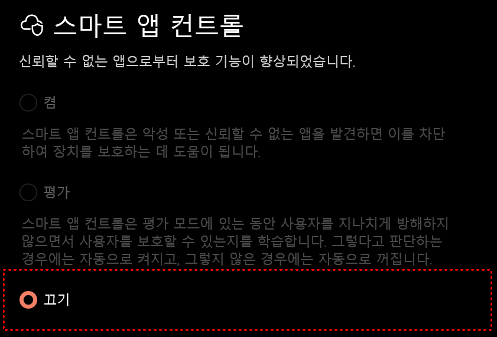

반복적인 업무를 자동화하여 시간과 비용을 절약할 수 있도록
다양한 자동화 도구를 개발하고 있습니다.
업무 자동화
반복 작업을 자동으로 처리하는 효율적인 도구를 제작합니다.
데이터 수집 & 분석
웹 데이터를 자동으로 수집하고 정리하는 크롤링 도구를 개발합니다.
맞춤형 솔루션
고객의 니즈에 맞는 맞춤형 자동화 솔루션을 제공합니다.
다운로드
프로그램을 다운로드하고 바로 시작하세요
NSITE
N사 블로그 자동화 프로그램
- N사 블로그 자동 방문
- 좋아요 / 댓글 자동 작성
- 이웃추가 / 서로이웃 자동 신청
- 분야별 / 인기글 / 이웃블로그 모드
- 간편한 원클릭 실행
NSITE 사용 가이드
N 블로그 자동화 프로그램 NSITE 공식 매뉴얼 v1.1 — 설치부터 실행까지 단계별로 안내합니다.
프로그램 소개
NSITE는 N 블로그 활동(좋아요·댓글·이웃추가·서로이웃추가)을 자동으로 처리해주는 Windows 전용 데스크톱 프로그램입니다.
직접 블로그를 돌아다니며 손으로 하던 단순 반복 작업을 프로그램이 대신 수행하여 시간을 절약하고, 내 블로그의 유입과 이웃 수를 효율적으로 늘릴 수 있습니다.
핵심 기능
방문한 블로그 최신 글에 좋아요를 자동으로 누릅니다.
직접 입력한 3개 문구 중 랜덤 선택, 또는 내장된 1,000개 댓글 중 자동 선택.
방문한 블로거를 내 이웃으로 자동 추가합니다.
서로이웃 신청 메시지를 자동 발송. 직접 입력 또는 내장 1,000개 메시지 중 자동 선택.
방문 대상 선택 (3가지 모드)
카테고리(일상·요리·여행·IT 등 32개)별 인기 블로그를 방문합니다.
검색어를 입력하면 해당 키워드의 인기 블로그를 방문합니다.
내 N 계정에 등록된 이웃 블로그의 최신 글을 방문합니다.
프로그램 특징
- ✓하루 최대 50개 블로그 처리 (안전 제한, 매일 자정 초기화)
- ✓1~30개 목표 방문 수를 슬라이더로 자유롭게 설정
- ✓한 번 방문한 블로그는 당일 재방문하지 않음 (중복 방지)
- ✓자동화 실행 중 절전·화면꺼짐 자동 차단
- ✓Chrome 세션이 끊겨도 자동 재시작 후 이어서 실행
- ✓자동 업데이트 지원 (새 버전 감지 시 설치 안내)
- ✓랜덤 댓글 1,000개 / 랜덤 서로이웃 메시지 1,000개 내장
시스템 요구사항
설치 방법
다운로드 페이지에서 최신 버전 설치 파일(NSITE_vX.X_setup.exe)을 받습니다.
다운로드한 파일을 더블클릭합니다.
사용자 계정 컨트롤 창에서 예를 클릭합니다.
설치 경로 기본값(C:\Program Files\NSITE) 사용을 권장합니다. 설치 버튼을 눌러 완료합니다.
바탕화면 바로가기 또는 시작 메뉴에서 NSITE를 실행합니다.
설치 완료 화면에서 "사용법 페이지 열기"를 체크하면 브라우저에서 이 가이드가 자동으로 열립니다.
Windows 스마트 앱 컨트롤이 켜져 있으면 SmartScreen 경고창 자체가 나타나지 않고 실행이 차단됩니다.
아래 링크를 주소창(또는
Win+R)에 입력하면 설정 화면이 바로 열립니다.
설정이 열리면 아래 이미지처럼 끄기를 선택하세요. 이후 NSITE를 다시 실행해주세요.

보안 프로그램을 일시적으로 비활성화하거나 예외 경로(
C:\Program Files\NSITE)로 등록 후 설치해주세요.
회원가입
회원가입 버튼 클릭가입하기 버튼 클릭입력한 이메일로 인증 메일이 발송됩니다. 받은 편지함에서 인증 링크를 클릭하면 가입이 완료됩니다.
Pro 플랜 활성화 후 프로그램을 사용할 수 있습니다.
가입 후 받은 편지함(스팸 폴더 포함)에서 인증 링크를 클릭해야 로그인이 가능합니다.
무료(Free) 플랜은 프로그램 이용이 제한됩니다. Pro 플랜 활성화 후 모든 기능을 이용할 수 있습니다.
실행 & 로그인
바탕화면 바로가기 또는 시작 메뉴에서 실행합니다.
예 클릭로그인 화면 상단에서 버전 확인이 자동으로 진행됩니다.
로그인 클릭아이디/비밀번호 저장 체크 시 다음 실행부터 자동 입력됩니다.
사용 방법 단계별
STEP 1 · 기능 선택 (토글 스위치)
화면 상단의 토글 스위치 4개로 실행할 기능을 선택합니다. 원하는 기능만 골라 조합하거나 모두 켤 수 있습니다.
방문한 블로그 최신 글에 좋아요를 자동으로 누릅니다.
설정한 문구 또는 내장 1,000개 중 랜덤으로 댓글을 남깁니다.
방문한 블로거를 이웃으로 자동 추가합니다.
서로이웃 신청 메시지를 자동 발송합니다.
이웃블로그 방문 모드에서는 이웃추가·서로이웃추가가 자동으로 비활성화됩니다.
STEP 2 · 댓글 문구 설정
댓글 토글을 켜면 댓글 문구 입력 영역이 펼쳐집니다.
- 3개의 댓글 문구를 직접 입력
- 각 칸 클릭 시 입력 다이얼로그 열림
저장클릭 시 다음 실행에도 유지초기화로 기본 댓글 복원 가능- 작업 시 3개 중 하나 랜덤 선택
- 댓글 문구 위의
랜덤댓글토글 ON - 내장된 1,000개 문장 중 방문마다 자동 선택
- 직접 입력 칸은 비활성화됨
- 별도 파일이나 인터넷 연결 불필요
STEP 3 · 서로이웃 메시지 설정
서로이웃추가 토글을 켜면 메시지 입력 영역이 펼쳐집니다.
- 서로이웃 신청 시 전달할 메시지 최대 2줄 입력
저장클릭 시 다음 실행에도 유지- 비워두면 메시지 없이 신청
- 메시지 입력 위의
랜덤메시지토글 ON - 내장된 1,000개 메시지 중 방문마다 자동 선택
- 직접 입력 칸은 비활성화됨
STEP 4 · 방문 대상 선택 (3가지 모드)
방문 설정 영역에서 카드를 클릭하여 모드를 선택합니다. 각 카드 우측 상단에 오늘 수집된 블로그 수가 표시됩니다.
드롭다운 메뉴에서 카테고리를 선택합니다. 선택 가능한 카테고리(32개):
STEP 5 · 목표 방문 수 설정
슬라이더를 좌우로 드래그하여 이번 실행에서 방문할 블로그 수를 설정합니다.
당일 50개 처리 시 작업이 자동 중단됩니다. 화면 하단 하루최대 바에서 오늘 남은 횟수를 실시간 확인할 수 있습니다. 매일 자정(00:00)에 자동 초기화됩니다.
STEP 6 · Chrome 열기 및 N 로그인
크롬 열기 버튼 클릭 → Chrome 자동 실행이 N 계정이 자동화 작업의 주체가 됩니다.
Chrome 창을 닫지 말고 유지한 채로 NSITE 프로그램으로 복귀합니다.
크롬 열기 버튼으로 실행한 Chrome에서 로그인하세요!기존에 열려 있던 Chrome이 아닌, NSITE가 자동으로 연 브라우저에서만 자동화가 연결됩니다.
STEP 7 · 자동화 시작
▶ 시 작 버튼 클릭"작업이 완료되었습니다" 알림창이 표시됩니다.
STEP 8 · 긴급정지
실행 중 긴급정지 버튼을 클릭하면 즉시 작업이 중단됩니다.
이미 완료된 작업은 하루 사용량에 포함됩니다.
화면 구성
현재 실행에서 몇 개 처리했는지 표시
오늘 하루 남은 가능 횟수, 매일 자정 초기화
업데이트
프로그램 시작 시 자동으로 최신 버전을 확인합니다.
예 클릭 → 설치 파일 자동 다운로드 (진행률 표시)UAC 권한 요청이 나타날 수 있습니다. 예를 클릭해주세요.
업데이트를 거부(
아니오)하면 프로그램을 사용할 수 없습니다.
업데이트 중에는 자동화 실행을 중단해주세요.
주의사항
- ① 하루 50개 제한 — 매일 자정(00:00) 초기화
- ② 관리자 권한으로 실행 — 일반 권한 실행 시 설정 저장 등 일부 기능 미작동
- ③ Chrome은 반드시
크롬 열기버튼으로 실행 — 직접 열면 자동화 연결 불가 - ④ N 계정 로그인 유지 — Chrome 비정상 종료 시 재로그인 후 확인 클릭
- ⑤ 과도한 사용 금지 — N 계정 제재 등의 결과는 이용자 책임
- ⑥ 재방문 방지는 실행 중에만 유효 — 프로그램 재시작 시 방문 기록 초기화
- ⑦ 1인 1계정 원칙 — 계정 공유·다중 계정 사용은 이용약관 위반
- ⑧ 절전모드 자동 차단 — 작업 완료·긴급정지 후 시스템 설정 자동 복원
- 이웃추가: 10~20개
- 좋아요: 50개 이하
- 과도하게 사용하지 않으면 계정 제재 위험이 크게 줄어듭니다.
FAQ — 자주 묻는 질문
아래 링크를 주소창(
Win+R)에 입력하면 설정이 바로 열립니다.windowsdefender://smartapp/설정에서 끄기를 선택한 뒤 NSITE를 다시 실행해주세요.
예를 눌러 업데이트해주세요. 업데이트 후 자동으로 재시작됩니다.
NSITE는 Chrome 버전에 맞는 드라이버를 자동으로 설치합니다.
확인을 눌러주세요. 이전에 방문한 블로그는 건너뛰고 이어서 실행됩니다.
▶ 시 작을 누르면 자동으로 블로그 목록을 수집한 뒤 작업이 시작됩니다.
이용약관 및 개인정보활용
RUNTO가 제공하는 NSITE 서비스 이용에 관한 약관입니다.
목적
본 약관은 RUNTO (이하 "회사")가 제공하는 자동화 프로그램 및 관련 서비스(이하 "서비스")의 이용과 관련하여 회사와 이용자 간의 권리, 의무 및 책임사항을 규정함을 목적으로 합니다.
정의
- "서비스"란 회사가 제공하는 자동화 프로그램 및 관련 기능을 의미합니다.
- "이용자"란 본 약관에 동의하고 서비스를 이용하는 개인 또는 법인을 의미합니다.
약관의 효력 및 변경
- 본 약관은 서비스를 이용하고자 하는 모든 이용자에게 적용됩니다.
- 회사는 필요한 경우 약관을 변경할 수 있으며, 변경된 약관은 공지 후 효력이 발생합니다.
- 이용자는 변경된 약관에 동의하지 않을 경우 서비스 이용을 중단할 수 있습니다.
서비스의 제공
- 회사는 자동화 프로그램 및 관련 기능을 제공합니다.
- 서비스는 운영상 필요에 따라 변경 또는 중단될 수 있습니다.
이용자의 의무
- 이용자는 서비스를 관련 법령 및 각 플랫폼의 정책에 따라 이용해야 합니다.
- 이용자는 서비스를 악용하거나 타인의 권리를 침해하는 행위를 해서는 안 됩니다.
- 이용자는 자동화 기능 사용 시 발생할 수 있는 모든 결과에 대해 책임을 집니다.
서비스 이용 제한
회사는 다음의 경우 이용자의 서비스 이용을 제한할 수 있습니다.
- 서비스의 정상적인 운영을 방해하는 경우
- 법령 또는 본 약관을 위반하는 경우
- 비정상적이거나 과도한 자동화 사용이 확인된 경우
- 계정 공유 또는 다중 계정 사용 등 부정 이용이 의심되는 경우
서비스 장애 및 책임
- 회사는 천재지변, 서버 장애, 외부 플랫폼 정책 변경 등 불가항력적인 사유로 인한 서비스 중단에 대해 책임을 지지 않습니다.
- 이용자의 환경(PC, 네트워크, 계정 문제 등)으로 발생한 문제에 대해서는 회사가 책임지지 않습니다.
자동화 기능 및 이용자 책임
- 본 서비스는 자동화 기능을 포함하고 있으며, 일부 플랫폼에서는 자동화 사용이 제한될 수 있습니다.
- 이용자는 해당 플랫폼의 정책을 충분히 이해하고 책임 하에 서비스를 이용해야 합니다.
- 서비스 사용으로 인해 발생하는 계정 제한, 정지, 삭제, 수익 손실 등 모든 결과에 대한 책임은 이용자에게 있습니다.
- 회사는 이용자의 서비스 사용 결과에 대해 어떠한 책임도 지지 않습니다.
서비스 사용으로 인해 발생하는 계정 제한, 정지, 삭제, 수익 손실 등 모든 결과에 대한 책임은 이용자에게 있습니다.
서비스 이용 문제 및 이용기간 연장
이용자가 사용하는 기능이 정상적으로 작동하지 않는 경우 확인 요청을 할 수 있으며, 문제가 사용자 환경의 문제가 아닌 시스템적인 문제인 경우 이용을 못한 기간만큼 이용기간 연장을 요청할 수 있습니다.
결제 및 환불
- 서비스는 유료로 제공될 수 있으며, 이용자는 결제 후 서비스를 이용할 수 있습니다.
- 환불은 원칙적으로 제공되지 않습니다.
- 단, 서비스가 정상적으로 제공되지 않는 중대한 시스템 오류가 발생한 경우 회사의 판단에 따라 환불 또는 이용기간 연장이 제공될 수 있습니다.
- 이용자의 단순 변심, 사용 미숙, 환경 문제, 플랫폼 정책 위반으로 인한 계정 제재 등의 사유로 인한 환불 요청은 거절될 수 있습니다.
- 결제 이후 서비스가 제공된 경우, 이용 여부와 관계없이 환불이 제한될 수 있습니다.
시스템 오류의 경우에 한해 회사 판단에 따라 환불 또는 이용기간 연장이 가능합니다.
환불 및 이용기간 연장 거절
다음의 경우 회사는 환불 및 이용기간 연장을 거절할 수 있습니다.
- 이용자의 단순 변심
- 이용자의 환경 문제로 인한 서비스 이용 불가
- 회사가 정상적으로 서비스를 제공한 경우
- 약관 위반으로 이용이 제한된 경우
- 외부 플랫폼 정책 위반으로 인한 계정 제재가 발생한 경우
계정 관리 및 보안
- 이용자는 계정을 제3자와 공유할 수 없습니다.
- 계정 정보 관리 책임은 이용자에게 있으며, 이를 소홀히 하여 발생한 손해에 대해 회사는 책임지지 않습니다.
- 비정상적인 로그인 또는 다중 접속이 확인될 경우 서비스 이용이 제한될 수 있습니다.
마케팅 및 정보 활용
- 이용자가 입력한 이메일 등 정보는 서비스 운영, 안내 및 마케팅 목적으로 활용될 수 있습니다.
- 회사는 이용자의 정보를 제3자에게 제공하지 않습니다.
개인정보처리방침
회사는 이용자의 개인정보를 관련 법령에 따라 보호합니다.
- 수집 항목: 이메일 등 서비스 제공에 필요한 최소한의 정보
- 이용 목적: 서비스 제공, 고객 문의 대응, 서비스 개선, 마케팅 활용
- 보유 기간: 서비스 이용 기간 동안 보관하며, 이용 종료 시 지체 없이 파기합니다.
면책조항
- 회사는 서비스를 통해 발생한 간접적, 부수적 손해에 대해 책임을 지지 않습니다.
- 회사는 외부 플랫폼의 정책 변경 또는 서비스 제한으로 인해 발생하는 문제에 대해 책임을 지지 않습니다.
- 이용자가 서비스를 활용하여 발생한 결과에 대한 책임은 이용자에게 있습니다.
관할 및 준거법
본 약관은 대한민국 법을 준거법으로 하며, 분쟁 발생 시 관할 법원은 대한민국 법원으로 합니다.
고객센터
궁금한 점이 있으시면 카카오톡으로 편하게 문의하세요.
카카오톡 오픈채팅 문의
프로그램 관련 질문, 오류 신고, 기능 요청 등
무엇이든 편하게 문의해주세요.